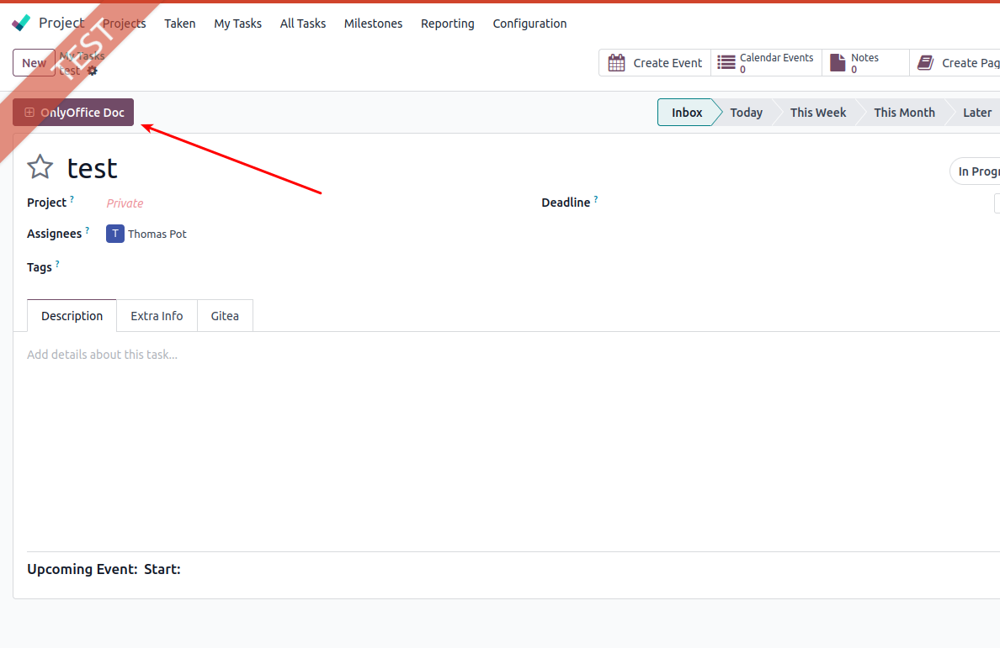
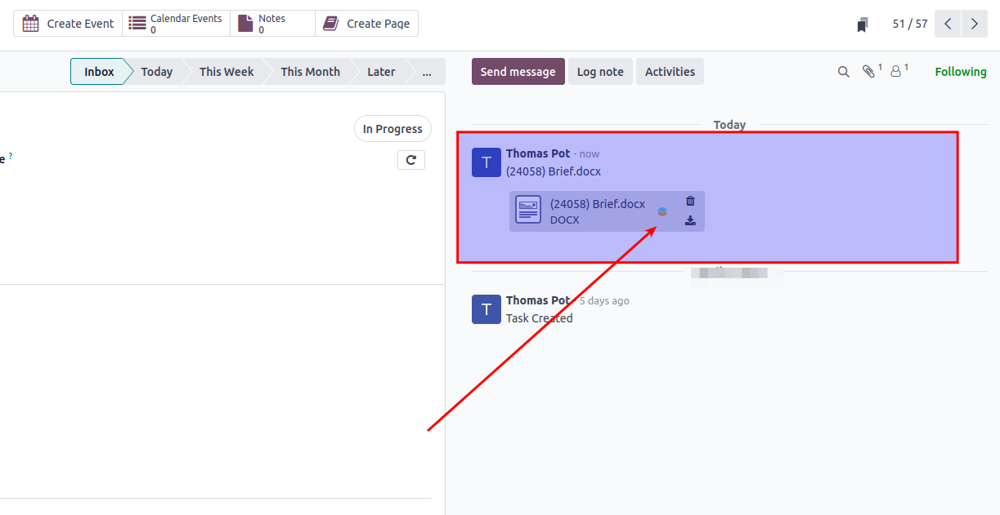

Templates OnlyOffice Project
Options and data for using templates OnlyOffice on Project (and tasks)
- Add ad template for project and task. Go to settings - general settings and navigate to ONLYOFFICE section. Click on the linke to templates
- Add ad template and select Model "Task". As specified in default Onlyoffice editor for ONLINE select file type .DOCX, .XLSX or .PPTX
- Add ad template and select Model "Project". As specified in default Onlyoffice editor for ONLINE select file type .DOCX, .XLSX or .PPTX. Optional you can add a different preview image to be shown when selected later.
- Now goto Project - Tasks. Select any task and open in form view. Use the button, to add a new document based on the earlier created template.
- After adding the document will be added as a new attachment and also shown in chatter as message for easy access.


Module is developed by Open2Bizz. Bug reports: support@open2bizz.eu